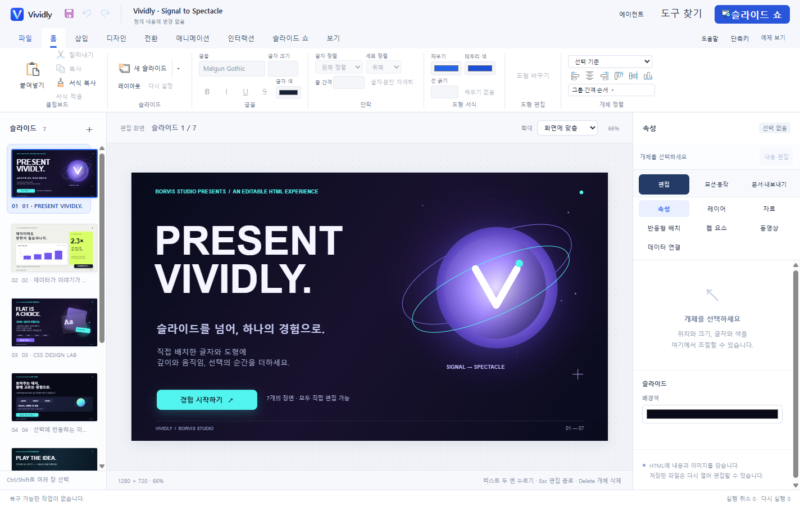
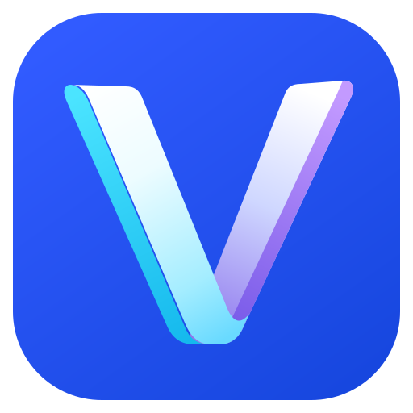

보면서 배치하고, 바로 다듬기
글자·도형·이미지·차트를 화면에서 선택하고 위치, 크기, 색을 조절하세요. 리본 메뉴와 선택 도구로 자료의 모습을 직접 완성합니다.
Present Vividly.
텍스트와 도형을 직접 배치하고,
움직임과 반응을 더해 하나의 HTML로.
익숙한 편집 방식으로 만드는 새로운 발표 자료.
AI 연결 없이도 첫 장부터 시작할 수 있습니다.
아이디어가 선명해지는 작업 공간

직접 만드는 HTML
한 장의 메시지를 다듬는 일부터,
클릭에 반응하는 이야기까지.
글자·도형·이미지·차트를 화면에서 선택하고 위치, 크기, 색을 조절하세요. 리본 메뉴와 선택 도구로 자료의 모습을 직접 완성합니다.
등장하는 문장, 클릭하면 열리는 설명, 원하는 페이지로 이어지는 버튼. 색·그림자·그라데이션에 모션과 동작을 연결하세요.
편집용 HTML을 저장하고 Vividly에서 다시 열어 글자와 개체를 수정합니다. 완성한 자료는 브라우저에서도 발표할 수 있습니다.
만든 뒤에는 이렇게
7장의 편집 가능한 쇼케이스. 네온 그라데이션·궤도 모션·라이브 차트·선택 버튼·키보드 동작을 직접 눌러보세요.
이 예제를 받아 편집하기함께 만드는 방식도 자유롭게
기본 편집·저장·발표에는 AI 연결이 필요하지 않습니다. 원할 때 Codex·API 또는 MCP를 연결해 자료를 만드는 작업을 함께할 수 있습니다.
선택적 연결과 데이터 안내
에이전트의 제안을 검토하고,
반영한 자료를 다시 직접 편집하세요.
첫 자료까지, 짧은 세 걸음
시작하기 전에
기본 수동 편집·저장·발표는 AI 연결 없이 사용할 수 있습니다. 아바타·외부 API·MCP 협업은 필요할 때 선택해서 연결하는 기능입니다.
현재 베타는 Windows 64비트용 ZIP으로 제공합니다. 압축을 풀고 함께 들어 있는 폴더·파일을 유지한 채 실행하세요. 일반 앱 실행에 Node.js나 별도 개발 서버는 필요하지 않습니다.
개발자 서명이 없는 초기 베타이므로 경고가 표시될 수 있습니다. 공식 릴리스의 파일명·버전·해시를 확인하세요.
Vividly에서 저장한 편집 정보가 있는 HTML을 다시 열어 편집합니다. PPTX 파일이나 임의의 웹페이지를 그대로 가져와 편집하는 기능은 제공하지 않습니다.
Present Vividly.